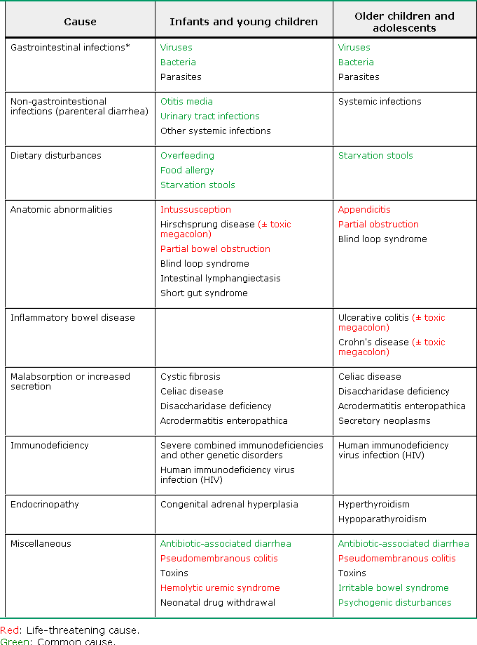
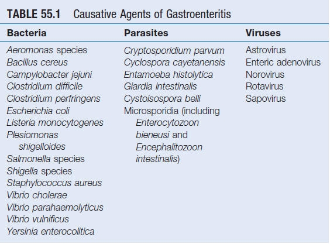
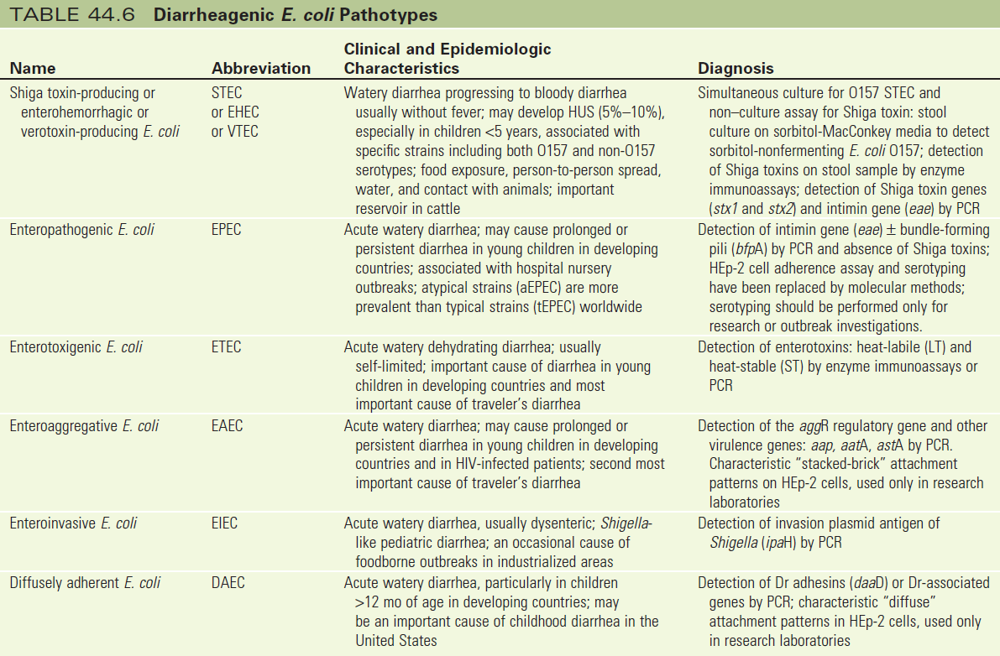
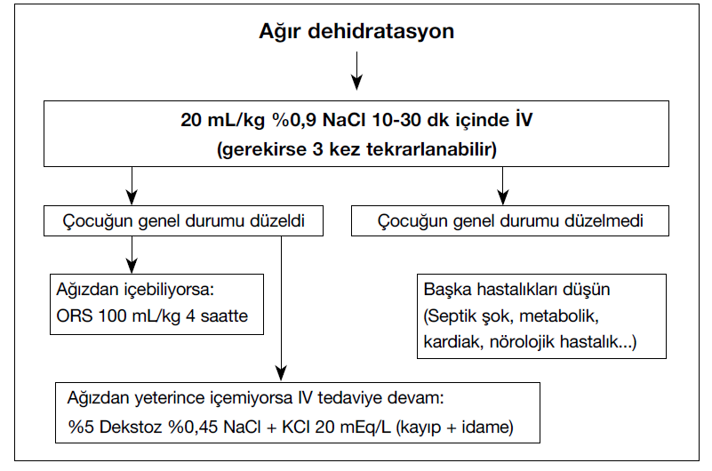

Hazırlayan: Doç. Dr. İlknur Çağlar
Aydın Adnan Menderes Tıp Fakültesi
Çocuk Enfeksiyon Hastalıkları Bilim Dalı
İshal: 24 saat içinde ≥3 kez cıvık/su gibi dışkılama
| Yaş Grubu | Miktar Kriteri |
|---|---|
| Bebek ve küçük çocuk (<10 kg) | >20 g/kg/gün |
| Büyük çocuk ve genç | >250 g/gün |
| Tip | Süre |
|---|---|
| Akut | Genelde <7 gün |
| Uzamış | 7-14 gün |
| Persistan | >14 gün |
| Kronik | >30 gün veya tekrarlayan |
| Reküren | İshalsiz 7 gün geçtikten sonra tekrar |
| Kriter | Tipler |
|---|---|
| Oluşum mekanizması | Ozmotik / Sekretuar |
| Gaita özelliği | Sulu / Kanlı (dizanterik) |
| İnflamasyon | İnflamatuvar / Non-inflamatuvar |
| Şiddet | Hafif / Orta / Ağır |

| Bulgu | En Olası Patojenler |
|---|---|
| Persistan veya kronik ishal | Cryptosporidium, Giardia, Cyclospora, Cystoisospora, E. histolytica |
| Gaitada makroskopik kan | STEC, Shigella, Salmonella, Campylobacter, E. histolytica, Vibrio, Yersinia |
| Yüksek ateş | Bakteriyel veya E. histolytica (STEC genelde afebril) |
| Karın ağrısı | STEC, Salmonella, Shigella, Campylobacter, Yersinia, Vibrio, C. difficile |
| Ağır karın ağrısı + bol kanlı gaita | STEC, Salmonella, Shigella, Campylobacter, Y. enterocolitica |
| Persistan karın ağrısı + ateş | Y. enterocolitica → akut apandisiti taklit edebilir |
| <24 saat süren bulantı-kusma | S. aureus enterotoksin veya B. cereus (kısa-inkübasyon) |
| 1-2 gün ishal + kramplar | C. perfringens veya B. cereus (uzun-inkübasyon) |
| ≤2-3 gün kusma, kansız ishal | Norovirüs |
| ≥1 yıl kronik sulu ishal | Brainerd ishali; postenfeksiyöz İBS |

| Özellik | Rotavirüs | Norovirüs | Sapovirüs | Astrovirüs | Adenovirüs |
|---|---|---|---|---|---|
| En sık yaş | <5 yaş | Tüm yaşlar | <5 yaş | <2 yaş | <4 yaş |
| İnkübasyon | 1-3 gün | 12-48 saat | 12-48 saat | 1-4 gün | 3-10 gün |
| İshal | Bol, sulu | Sulu, akut | Sulu, hafif | Sulu, hafif | Sulu, uzayabilir |
| Kusma | %80-90 | >%50, baskın | Nadir | Nadir | Nadir |
| Ateş | Sık | Nadir | Nadir | Nadir | Nadir |
| Süre | 2-8 gün | 1-5 gün | 1-4 gün | 1-5 gün | 3-10 gün |
| Tanı | Gaita EIA / lateks | RT-PCR | RT-PCR | Gaita EIA | Gaita EIA |

| Tip | Klinik | Not |
|---|---|---|
| STEC/EHEC | Sulu → afebril kanlı ishal → hemorajik kolit → HÜS | ❌ Antibiyotik verilmez! |
| EPEC | Akut sulu, persistan ishal | |
| ETEC | Seyahat ishalinin en sık nedeni | Dehidratasyon riski! |
| EIEC | Dizanteri-benzeri (Shigella'dan hafif) | Shigella gibi tedavi |
| EAEC | Akut sulu, persistan, kanlı ishal | |
| DAEC | Akut sulu, persistan, ateşsiz kanlı | >1 yaş |
| AIEC | İBH ile ilişkili ishal | Yeni tanımlanmış |
| Etken | Bulaş | Klinik |
|---|---|---|
| S. aureus | Et, tavuk | Bulantı, kusma; kendi kendini sınırlar |
| C. perfringens | Et, tavuk | 14 saat sonra ishal; <24 saatte geçer |
| B. cereus | ⭐ Pirinç | Emetik (1-6 sa) / İshal (6-24 sa) |
Hasta gerçekten ishal mi?
│
┌──────────┬──────────┼──────────┬──────────┐
↓ ↓ ↓ ↓ ↓
Günlük Oral alımı Dehidratasyon Genel Gaitada
ishal- nasıl? bulgusu var durum kan-mukus
kusma mı? nasıl? var mı?
sayısı?
| Bulgu | Hafif (%3-5) | Orta (%6-9) | Ağır (≥%10) |
|---|---|---|---|
| Genel görünüm | İyi, alert | Huzursuz, irritabl | Letarjik, bilinç kapalı |
| Susuzluk | Normal | Çok istekli su içme | İçemez |
| Nabız | Normal | Hızlı | Hızlı ve zayıf / yok |
| Sistolik KB | Normal | Normal / düşük | Düşük |
| Solunum | Normal | Derin, takipne olabilir | Takipne → HİPOPNE → APNE |
| Ağız mukozası | Islak / hafif kuru | Kuru | Çok kuru |
| Ön fontanel | Normal | Çökmüş | Belirgin çökmüş |
| Gözler | Normal | Çökmüş | Belirgin çökmüş |
| Göz yaşı | Var | Azalmış | Yok |
| Cilt turgoru | Normal | Azalmış | Geri dönmez (tenting) |
| İdrar çıkışı | Normal / hafif azalmış | Belirgin azalmış | Anüri |
| Dehidratasyon | Rehidratasyon | İdame | Beslenme |
|---|---|---|---|
| Yok / minimal | Verilmez | Her ishal: 10 mL/kg, kusma: 2 mL/kg ORS | Anne sütü + yaşına uygun |
| Hafif-orta | 50-100 mL/kg ORS, 3-4 saat | Aynı | Aynı |
| Ağır | 20 mL/kg RL/izotonik IV → ORS 100 mL/kg | NG veya IV idame | Aynı |
| Bileşen | Miktar |
|---|---|
| Osmolarite | 245 mOsm/L |
| Glukoz | 75 mmol/L |
| Na | 75 mEq/L |
| K | 15-25 mEq/L |
| Sitrat | 8-12 mmol/L |

Ağır dehidratasyon
│
20 mL/kg %0,9 NaCl 10-30 dk İV
(gerekirse 3 kez tekrarla)
│
┌───────────┴───────────┐
↓ ↓
Düzeldi Düzelmedi
│ │
┌──────┴──────┐ Başka hastalık düşün
↓ ↓ (septik şok, metabolik,
İçebilir: İçemez: kardiak, nörolojik...)
ORS 100mL/kg IV devam:
4 saatte %5Dex %0,45NaCl
+KCl 20mEq/L
| İyi Yanıt | Kötü Yanıt (Yüklenme) |
|---|---|
| Bilinç düzeliyor | Gallop ritmi |
| Sıcak cilt, KDZ <2 sn | Bilateral raller |
| Güçlü nabızlar | Solunum sıkıntısı |
| İdrar ≥1 mL/kg/sa | Hepatomegali |
| Ağırlık | Günlük Sıvı |
|---|---|
| 0-10 kg | 100 mL/kg |
| 11-20 kg | 1000 + 50 mL/kg (üstü) |
| >20 kg | 1500 + 20 mL/kg (üstü) |
Maks: 2400 mL/gün
| Patojen | Endikasyon | İlk Seçenek | Alternatif |
|---|---|---|---|
| Shigella | Kanıtlı/şüpheli | Azitromisin, siprofloksasin, seftriakson | Sefiksim, nalidiksik asit, TMP/SMX |
| Salmonella (NTS) | Yüksek riskli | Azitromisin, siprofloksasin, seftriakson | TMP/SMX, kloramfenikol |
| Campylobacter | Dizanterik (ilk 3 gün) | Azitromisin, eritromisin | Siprofloksasin |
| STEC | ❌ VERİLMEZ | - | - |
| ETEC/EAEC/EPEC | Seyahat ishali | Azitromisin | Sefiksim, TMP/SMX |
| V. cholerae | Konfirme/şüpheli | Azitromisin | Siprofloksasin, doksisiklin |
| C. difficile | Orta-ağır | Metronidazol | Vankomisin PO 40 mg/kg/gün |
| Yaş | Doz | Süre |
|---|---|---|
| <6 ay | 10 mg/gün | 10-14 gün |
| ≥6 ay | 20 mg/gün | 10-14 gün |
Akut gastroenterit tablosuyla gelen 18 aylık bebeğe hangi tedavi yaklaşımı önerilmez?
4 yaşında erkek, 24 saattir günde 7 kez sulu dışkılama, 4 kez kusma. Ateş 38°C. Cilt turgoru↓, KDZ 3 sn, gözler çökük, mukozalar kuru, nabız 180/dk, solunum 50/dk, derin soluma. 10 saattir anüri. Na 148, K 3.1, pH 7.25, HCO₃ 13. İlk tedavi?
Kartlara tıklayarak cevabı görün
Kartlara tıklayarak cevabı görün